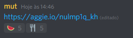

(I keep thinking that it might be a cool idea to make an html version of cadavre exquis (There's even a head and
a
body!)
2021.02.04.1
We in order to solve the issues and get some benefits of making it with digital paper, we came up with the
watermelon
fork method (someone will eventually change this parenthesis to the computer science concept that is
actually that,
but
I am too lazy to try to remember now). It was as the follows:
Each person reacted to the posted link with a watermelon once they started
their
drawing and with a fork

-
Each person created their own initial drawing in aggie.io choosing the size, background color (and any other
parameters you could have for the seed)
-
Within their own created drawing a person game up with some initial drawing and figures out a way to create a
mask
to work as the hidden information part of the cadavre exquis game. (a benefit of the digital is it's as
cumbersome
to create these masks as it is to "fold" a chunk of the paper back to hide a part of the drawing). ((Ideally
they
should've created a mask that the next person can understand and pass on, but the tension of understanding it
is))
also fun.
-
Once each person had created their seed, they could share the link to it in our messaging app with a reaction
feature. Then they could go continue someone elses drawing and before going through the link react with a
watermelon üçâ. Therefore, if a link had a watermelon, someone was working on it.
-
Once they finished their part of the drawing and covered it with how they understood the mask worked, they would
go back to discord and react with a fork üç¥, demonstrating that they had finished eating the watermelon üçâ
-
We are unsure if this method works with other emojis, if you test it out and it does, please send us a pull
request modifying the following List of emojis for which the watermelon fork method is tested and
works
-
watermelon: üçâ fork: üç¥